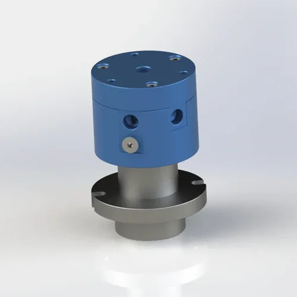

How to select a pneumatic rotary joint for laser tube cutting equipment: assist gas transfer, pneumatic clamping, blow-off, and coolant support. Pressure, RPM, passage count, and material selection based on 200,000+ units of Begapunk field experience.
Who this is for: Laser machine builders, automation engineers, and procurement teams specifying pneumatic rotary components for tube and pipe cutting systems.
In a tube cutting machine, the rotary joint is not just a spare part. It sits in the rotating path where gas or pneumatic pressure must remain stable while the head, chuck, or fixture changes position. A failed rotary joint in a laser cutting system does not just leak — it destroys cut quality, drops workpieces, or introduces contamination into the assist gas stream.
At Begapunk, roughly 15% of custom rotary joint inquiries come from laser cutting machine builders. The majority of these inquiries are not for standard catalog models. They are for custom layouts that must fit a specific chuck bore, handle a specific assist gas, or integrate with a specific cutting head brand. Getting the specification right before production saves 3–6 weeks of rework.

Typical requirementMulti-passage air transfer for assist gas, pneumatic motion, and compact machine integration.Confirm whether the line carries compressed air, nitrogen, oxygen, coolant support, or vacuum. Gas cleanliness and pressure stability matter more than catalog size alone. Reference: ISO 4414:2010 recommends that maximum working pressure in pneumatic systems should not exceed 80% of the component rated pressure for continuous duty. Begapunk applies a 30% derate factor for laser cutting applications.
Separate assist gas, clamp release, blow-off, and sensor-related pneumatic functions when independent control is required. Each channel is mechanically isolated — a dual-channel joint is not "one channel that splits in two." It is two complete seal assemblies in one housing.
Review the chuck, cutting head, and anti-rotation bracket position before selecting thread, flange, or custom mounting. If the rotary joint sees significant side load from stiff hoses, or if the machine vibrates, use flange mount. The bolted connection will not loosen under vibration.
| Machine Area | Common Function | Selection Focus | Begapunk Direction |
|---|---|---|---|
| Rotary chuck | Clamping and unclamping air | Stable pressure, compact flange, hose protection | BP-2P-0001 or BP-3P-0004 |
| Cutting head rotation | Assist gas and blow-off | Clean flow path, low leakage, 6–10 mm bore | Custom multi-passage air rotary union |
| Tube handling system | Air cylinder actuation | Moderate speed, repeatable pneumatic transfer | BP-2P-0001 or BP-3P-0006 |
| Coolant support | Cutting fluid or mist | Water-compatible seals, stainless steel body | BP-2P-130-0001 (SS body, 5 MPa rated) |
A 3 mm bore restricts nitrogen flow to ~15 L/min at 0.6 MPa. Most fiber laser cutting requires 30–60 L/min for clean kerf edges. The result: inconsistent cut quality, dross buildup, and premature nozzle wear. Rule: Specify 6–10 mm bore for assist gas; 3 mm is only for small clamp circuits.
FKM (fluoroelastomer) seals are rated for <200 RPM. A continuous rotating cutting head at 300–500 RPM generates enough heat to harden FKM within 2–3 weeks. The seal lip cracks, and gas leaks into the machine enclosure. Rule: Specify PTFE composite seals for any joint above 200 RPM.
Oxygen and oil-lubricated compressed air in the same rotary joint create a fire hazard. Even trace oil residue from shop air can ignite in an oxygen-rich passage. Rule: Specify oil-free compressed air for all laser cutting pneumatic systems. Use PTFE or specialized oxygen-compatible seals.
The cutting head vibrates at high frequency during piercing. A threaded joint can loosen under this vibration. Use flange mount with a lock-washer bolt pattern. The anti-rotation tab must allow ±2 mm radial float for self-alignment.
Laser cutting generates fine metal dust that circulates in the machine enclosure. Install a 25-micron filter upstream of the rotary joint. For high-precision cutting heads, use 10-micron filtration. Contaminants larger than the 0.02–0.05 mm seal gap embed in the PTFE and score the shaft.
Always run the joint at 0.2 MPa and 50 RPM for 5 minutes before applying full assist gas pressure. This beds in the PTFE seal film. Skipping run-in causes high spots to erode channels into the seal face — permanent damage that cannot be repaired.
Send the current drawing, port layout, media, pressure, RPM, and mounting space. Begapunk can review the interface and suggest a suitable pneumatic rotary joint — or design a custom layout for your specific cutting head brand.
Laser tube cutting equipment typically uses a 2–4 passage pneumatic rotary joint or custom multi-passage air rotary union. Passages carry assist gas (oxygen, nitrogen, or compressed air), pneumatic clamping air, blow-off dust removal, and sometimes coolant support. Flange mount is preferred for high-vibration cutting heads; threaded mount works for compact chucks.
Assist gas lines typically run at 0.4–0.8 MPa (4–8 bar). Pneumatic clamping runs at 0.2–0.5 MPa. For continuous duty, derate the rated pressure by 30% per ISO 4414 guidelines. RPM ranges from 60–300 for indexing chucks to 100–500 RPM for continuous rotating cutting heads.
Yes, but each medium must flow through a mechanically isolated passage with its own seal assembly. Cross-contamination between oxygen and oil-lubricated compressed air is a fire hazard. Specify oxygen-compatible seals (typically PTFE or specialized composites) and ensure the compressed air line is oil-free.
The most common mistake is undersizing the bore for assist gas flow. A 3 mm bore restricts nitrogen flow to ~15 L/min at 0.6 MPa — insufficient for most fiber laser cutting. Laser assist gas requires 6–10 mm minimum bore. Another common error is using FKM seals above 200 RPM, which causes overheating and hardening within weeks.
Yes. Begapunk provides free 2D PDF drawings and 3D STEP/IGES files after the model or custom layout is confirmed. This allows your mechanical team to verify fit, mounting compatibility, and hose routing before placing the order.
Technical Note: All pressure ratings and RPM specifications referenced in this article are based on Begapunk BP-series standard pneumatic rotary joints. Actual performance depends on operating conditions and maintenance practices. For applications outside standard ratings, consult factory engineering before specification. Last updated: June 11, 2026.